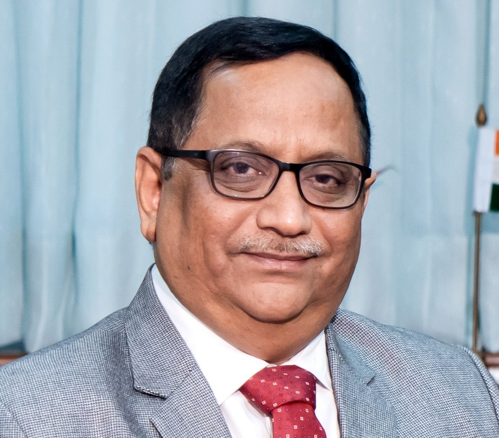
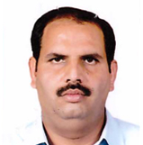
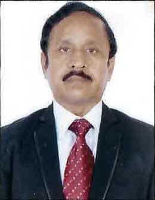

Our People make us great
The management board is responsible for smooth running of the company in terms of financial, operational, legal and business development matters, including investment and strategic initiatives, which concerns the IKLL group portfolio.
-
Mr. K. J. Patel is the Managing Director of IFFCO, he is a highly accomplished mechanical engineer with over four decades...
View More 
Mr. K. J. Patel
Chairman & Nominee Director
-
Mr. Yogendra Kumar is holding the position of Nominee Director in IKLL. He holds a bachelor degree in agriculture and hails from the family of agriculturists...
View More Mr. Yogendra kumar
Nominee Director
-
Mr. Ramesh Kumar is a Non-Executive Director on the Board of IFFCO Kisan Logistics Limited.
View More Mr. Ramesh Kumar
Nominee Director
-
Mr. Sunil Kumar Khatri is currently occupying the position of Nominee Director of IKLL.
View More 
Mr. Sunil Kumar Khatri
Nominee Director
-
He has rich experience of managing Project
View More 
Mr. Arun Kumar Sharma
Managing Director and CEO
-
Mr. S.R Bommidi is currently holding the position of Chief Financial Officer in IKLL...
View More Mr. S.R. Bommidi
CFO
-
Sh. Shivalingappa Patil has been appointed as Independent Director - IKLL for tenure of Five Years...
View More 
Mr. Sh. Shivalingappa Patil
Independent Director
-
Smt. Kanak Chaturvedi has been appointed as Independent Director- IKLL for tenure of Five Years w,e.f..
View More Smt. Kanak Chaturvedi
Independent Director